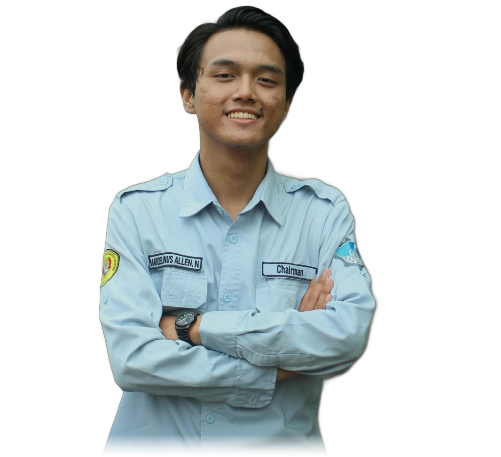

Electrical engineering · UPNVJ
Marselinus Allen
Nugraha.
Embedded systems, IoT & applied AI.
Electrical Engineering student at UPN “Veteran” Jakarta, building firmware, industrial automation, and edge AI systems.
Open for collaboration

Hardware meets software.Engineering with purpose.
Indonesia3.82 / 4.00 GPAElectrical Engineering · UPNVJ
Chairman, KSM IoTLeading 3 departments & 9 divisions
Certified lab assistantPhysics, circuits, digital & electronics
01 / Projects
GitHub repositories Built across hardware and software.
Selected systems and tools. Open a project to explore the work behind it.
VisionLab Annotation Studio
Multi-model detection, human review and dataset export in one desktop studio.
ESP32-CAM Safe Controller
Local face recognition connected to actuator control and a browser-based admin interface.
PLC Elevator Controller
Call sequencing, interlocks and motor control in a simulated elevator.
DOL Motor Starter Panel
From power and control circuits to a documented panel layout.
Mamdani Fuzzy Inference Engine
A modular Python engine for membership functions, fuzzy rules and centroid output.
LinguaPlay for YouTube
Clickable Japanese subtitles, contextual AI tutoring and Anki cards inside YouTube.
Agentic Engineering Kit
Reusable engineering workflows with an installer, MCP configuration and isolated Git worktrees.
02 / Connected capabilities
Hardware, software, and the space between.
Three connected disciplines, grounded in the projects above.
Embedded systems & IoT
Firmware, sensor integration and communication between devices.
Explore embedded workApplied AI & software
Computer vision, inference and structured diagnostic workflows.
Explore AI workIndustrial automation
Control logic and documented electrical systems.
Explore automation work
03 / Experience & education
Building. Teaching. Leading.
Engineering practice alongside academic and organizational work.
Chairman
KSM IoT · FT UPN “Veteran” Jakarta
Leading organizational initiatives across 3 departments and 9 divisions, coordinating engineering teams and internal project development.
Laboratory Assistant
Electrical Engineering Laboratories · UPNVJ
Supporting practical experiments, preparing equipment, and assisting students with circuits, digital systems, physics, and electronics.
Firmware Division Staff
KSM IoT · FT UPN “Veteran” Jakarta
Developed ESP32 and ESP8266 firmware, integrated sensors and MQTT telemetry, and contributed to engineering competition projects.
More organizational experience
Research & Development Staff · HMTE UPNVJ
Jan — Dec 2025 · Project Officer of Propel KTI and division leadership for Electrolympic and Propel Software.
Vice President · Musicasa, SMAN 12 Tangerang
Jan 2020 — Dec 2022 · Coordinated school music productions and organizational programs.
04 / Credentials
8 documentsLearning, with the evidence to show it.
Technical training, four laboratory appointments, and academic committee work. Select any document to view it in detail.
Technical training
AI, Python & electrical CADAutoCAD Electrical Training
HMTE UPNVJ
Laboratory appointments
Electrical Engineering Laboratories · UPN “Veteran” Jakarta
Basic Physics
Electrical Engineering Laboratories · UPNVJ
Digital Systems
Electrical Engineering Laboratories · UPNVJ
Electric Circuits
Electrical Engineering Laboratories · UPNVJ
Basic Electronics
Electrical Engineering Laboratories · UPNVJ
Academic committee work
Program contributionAdjunct Professor Program Committee
Electrical Engineering Program · UPNVJ
05 / Let’s connectHave a system in mind?
Have a system in mind?
Let’s build it together.
Open to embedded firmware, IoT engineering, applied AI projects and technical collaborations.